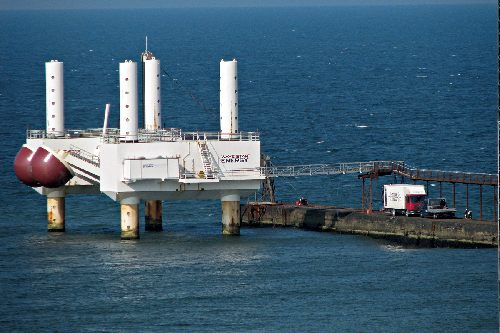
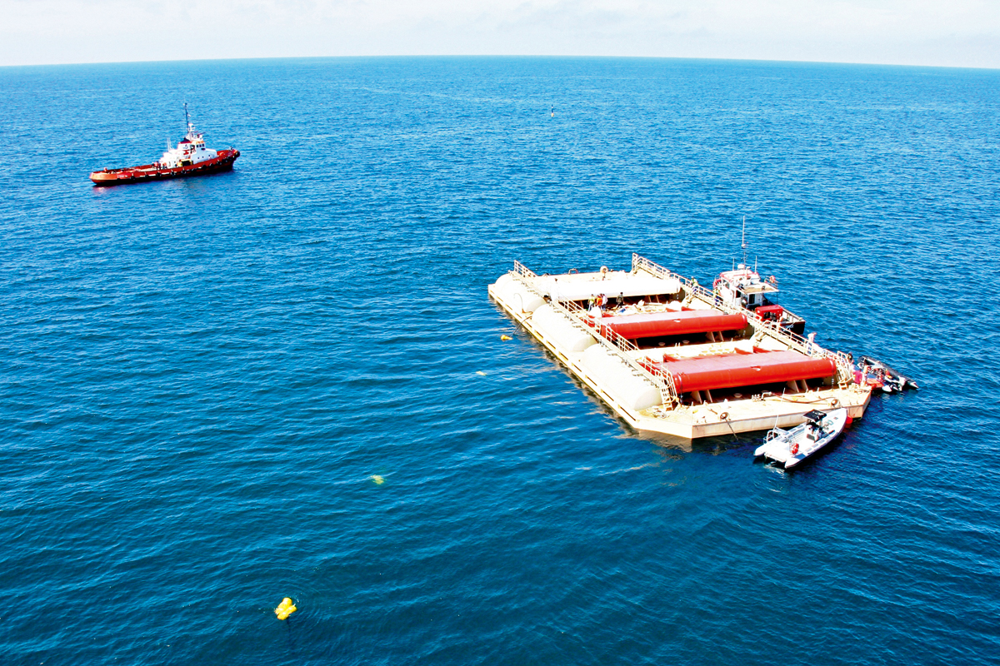

A energia que vem do mar
A crescente demanda da raça humana por eletricidade e o fim previsível dos combustíveis fósseis têm incentivado a busca constante por alternativas para sustentar a civilização moderna. Nos últimos anos, duas fontes de energia limpa e renovável, a eólica (dos ventos) e a solar, consolidaram-se e já são comercializadas em várias partes do mundo.
Agora, uma terceira opção, as ondas do mar, começa a chamar atenção e a receber investimentos para o desenvolvimento de formas e tecnologias dedicadas ao seu aproveitamento. Pelo menos dez países, inclusive o Brasil, têm projetos nesses sentido, e dois deles, Portugal e Reino Unido, já a utilizam comercialmente. Calcula-se que em 15 ou 20 anos essa opção energética já terá adquirido uma relevância considerável. No Brasil, a mais recente iniciativa está sendo instalada no Rio de Janeiro.
|  |
As tentativas para gerar energia elétrica com as ondas vêm de longe: em 1799, o francês Phillip Girard registrou o primeiro pedido de patente de um motor movido por ondas. Não se sabe, porém, se ele tirou seu invento do papel. Um dos primeiros equipamentos para extrair eletricidade do mar registrados foi um motor construído em 1891 por Henry P. Holland, instalado na costa de San Francisco, na Califórnia. Mas o projeto não funcionou como planejado e foi abandonado. Após anos de tentativas, a primeira usina a funcionar de fato foi instalada no porto de Huntington, também na Califórnia, em 1909. Depois disso, o interesse pelas vagas marinhas como fonte de energia caiu e só foi retomado a partir da década de 1970, na esteira da primeira crise do petróleo. Hoje, estima-se que o mar tem potencial para gerar eletricidade capaz de atender todo o consumo do planeta. No Brasil, com aproximadamente 8 mil quilômetros de litoral, calcula-se que a capacidade seja de 114 gigawatts (GW), equivalente a oito usinas de Itaipu ou a 77% da potência instalada no país, que é de 148 GW. “Desse total, 27 GW são de marés (Maranhão para cima) e 87 GW de ondas (abaixo do Maranhão)”, informa Segen Estefen, coordenador do Laboratório de Tecnologia Submarina (LTS) do Instituto Alberto Luiz Coimbra de Pós-Graduação e Pesquisa de Engenharia (Coppe), da Universidade Federal do Rio de Janeiro (UFRJ). |
Pontencial MaiorEstefen idealizou e coordenou o primeiro protótipo latino-americano de usina geradora de eletricidade a partir das ondas, instalado em 2012 no porto cearense de Pecém, a 60 quilômetros de Fortaleza (veja quadro à pág. 33). Segundo ele, esse potencial de 114 GW é apenas ao longo da costa. “Em toda a Zona Econômica Exclusiva (ZEE) do Brasil [que se estende por 200 milhas – ou 370 quilômetros – mar adentro], os valores são muito superiores, mas ainda não há uma estimativa confiável”, diz. “Se desenvolvermos técnicas para aproveitar as ondas nessa área, a energia gerada poderá ser utilizada nas instalações de exploração de petróleo, por exemplo, com ganhos imensos.” O passo inicial para isso será dado com o novo projeto, também coordenado por Estefen, a ser instalado no oceano a cerca de 14 quilômetros da praia de Copacabana, perto da Ilha Rasa, no Rio. Ele será desenvolvido por uma parceria entre a Coppe, a startup brasileira Seahorse Wave Energy e a Furnas Centrais Elétricas, que investirá R$ 9 milhões na iniciativa. “É um protótipo mais ousado que o de Pecém, porque não ficará em cima do quebra-mar, mas totalmente dentro d’água”, diz Estefen. “Com esse projeto, nosso desafio é não apenas gerar energia elétrica, mas fazer isso com custos baixos. Apesar de a onda ser de graça, se não tivermos aparelhos mais simples e menos custosos, com preços mais acessíveis, não teremos competitividade.” |
 |
Com capacidade instalada de 100 quilowatts (que daria para abastecer 200 residências de consumo médio), a usina será construída em um local com profundidade de 20 metros. No projeto, ela tem quatro colunas de aço, fixadas numa base de concreto no leito marinho, que se erguem verticalmente até acima da superfície do mar. Cada uma delas está fixada em um dos quatro vértices de um quadrado virtual, em cujo interior há um flutuador cilíndrico, semelhante a um lápis “gordo” com a ponta para baixo, com 11 metros de altura e 4,5 metros de diâmetro.
No topo das colunas de aço haverá uma plataforma, lembrando a gávea de um veleiro, onde será instalado o gerador de eletricidade. Da parte de cima do flutuador sai uma haste, que transpassa o fundo da plataforma e é ligado ao gerador. Com a passagem das ondas, o flutuador sobe e desce, assim como a haste ligada a ele. Por meio de um sistema mecânico, esse movimento vertical torna-se rotativo, fazendo girar uma turbina no gerador e criando a eletricidade. Ela será transmitida por um cabo, que descerá ao fundo do mar pelas colunas e dali seguirá pelo leito marinho até a ilha, para conexão à rede elétrica.